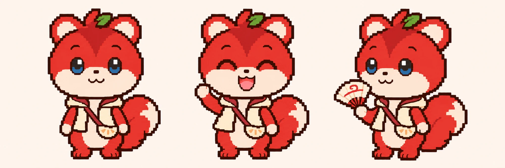

02 · 플레이 흐름과 핵심 기능
하루는 이렇게 흐르고, 이렇게 플레이합니다
① 날씨 확인
기온·체감·강수
② 퀘스트 열림
날씨에 맞는 목록
③ 이동·미션
실내와 그늘 우선
④ 보상 기록
스탬프와 도감
🌡️
날씨 맵
체감이 높으면 야외 퀘스트가 잠깁니다.
⛺
쉼터 체크인
쿨링 쉼터에서 체력을 채웁니다.

능금 스탬프
대구 특산물 능금 스탬프를 장소마다 찍어 모읍니다.
👥
팀 모드
2~4명이 단서를 나눠 찾습니다.
🐿️
하랑이 가이드
단서를 주고 힌트를 줍니다.
🎒
아이템 가방
부채, 돋보기, 쿨링 패치를 씁니다.
아이템 예시 근거: brand/game_items_v1.md · 기능 이름은 창작 초안
03 · 보상 기록
퀘스트를 끝내면 무엇이 쌓이나
능금 스탬프
- 장소 방문 시 스탬프 1개
- 장소 미션 완료 시 추가 1개
- 날씨가 맞는 장소만 스탬프 지급
📖 도감
- 방문 장소 이름, 날짜, 날씨
- 장소마다 발견한 단서 한 줄
- 재방문 시 방문 횟수 누적
🗺️ 방문 장소 기록
- 가 본 장소를 지도에 색칠
- 동네별 완성률 표시
- 쉼터 체크인 시간대 기록
🏅 여름 배지
- 스탬프 일정 개수 달성 시 지급
- 팀 배지: 팀원 전원 같은 퀘스트 완료
- 여름 시즌이 끝나면 결과를 기록
모든 기록은 "오늘 어디를 걸었고 무엇을 봤는지"를 남깁니다.
창작 기능 초안. 스탬프 개수와 배지 조건은 팀이 정합니다.
07-2 · 캐릭터 소개
하랑이: 바람을 전하는 바람 도사 견습생

상태 알림 (표정)
- 행복한 표정 → 퀘스트 완료
- 차분한 표정 → 쉼터 안내
- 놀란 표정 → 새 퀘스트 열림
플레이어와의 관계
- 후보 1 · 여행 온 친구: 하랑이가 더위 피하는 법을 알려 줌
- 후보 2 · 골목의 수호자: 플레이어는 골목을 찾은 시민

09-2 · SNS 스티커
SNS에서는 하랑이 스티커로 만나요

이렇게 씁니다
- 인증 사진에 붙이는 스티커
- 챌린지 해시태그와 함께 공유
- 표정과 포즈 6종 예시
6종 예시
- 손 흔들기, 부채 들기
- 사과 먹기, 엄지 척
- 나무 아래 낮잠, 조끼 차림으로 앉아 쉬기
기대효과
- 인증 사진 공유로 캐릭터가 자연스럽게 노출
- 챌린지 참여의 계기
- 꾸미기 아이템 구매 동기
팀 제작 예시 이미지입니다. 활용 방식은 제안이며, 사용 허가 범위는 확인이 필요합니다.